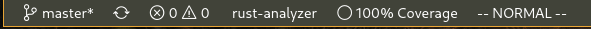
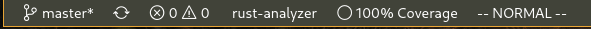

杂记
随便记录一下.
使用一些笔记软件, 如Wolai, 虽然能做到同步, 能生成关系图. 但一个是收费, 一个是存在崩溃的风险.
思来想去, 还是使用github稳定些.
慢慢的将已经稳定的(不会大改动)的笔记搬运过来.
项目使用mdbook构建, 同时添加了以下插件
同时使用GitHub Actions实现自动构建和发布.
环境搭建
IDE 配置 -- Rust
概述
除了能自动补全, 还能测试, 还能覆盖率.
安装
安装完插件, 基本环境就有了, 自动补全, 测试, run.
基本配置
{
"rust-analyzer.lens.methodReferences": true,
"rust-analyzer.lens.references": true,
"rust-analyzer.procMacro.enable": true,
"rust-analyzer.hoverActions.references": true,
"rust-analyzer.inlayHints.hideNamedConstructorHints": true,
}
debug
debug需要额外配置一下.
{
"rust-analyzer.debug.engine": "vadimcn.vscode-lldb",
"rust-analyzer.debug.openDebugPane": true,
}
coverage
基础的测试, RA 已经支持了. 如果需要 coverage 信息, 还需要额外安装一些工具.
目前只有 nightly 支持
-
安装额外工具 grcov:
cargo install grcov -
设置
rust-toolchain, 参考 Overrides[toolchain] channel = "nightly" components = [ "llvm-tools-preview", "rust-analyzer"] -
设置
cargo-config,- 参考 Configuration
- 原理见 instrument-coverage
- 这样执行
cargo test和cargo build时自动生成target/coverage/grcov.profraw文件
[build] rustflags = ["-Cinstrument-coverage",] [env] LLVM_PROFILE_FILE = "target/coverage/grcov.profraw" -
利用 grcov 产出 lcov.info 文件
grcov $(find . -name "grcov.profraw" -print) \ --branch \ --ignore-not-existing \ --binary-path ./target/debug/ \ -s . \ -t lcov \ --ignore "/*" \ -o target/coverage/lcov.info -
借助[Coverage Gutters](Coverage Gutters) 显示覆盖率
- 打开对应文件, 在 状态栏即可看到对应的 覆盖率, 点击可在文件上切换显示


- 打开对应文件, 在 状态栏即可看到对应的 覆盖率, 点击可在文件上切换显示

自动生成lcov.info
手动生成lcov.info 文件太费事了, 可以监听 target/coverage/grcov.profraw 文件变化, 再自动生成.
-
安装额外工具:
cargo install watchexec-cli -
添加 VSCode Task,
{ "version": "2.0.0", "tasks": [ { "label": "watch coverage", "type": "shell", "isBackground": true, "command": "~/.cargo/bin/watchexec", "args": [ "--no-vcs-ignore", "-w", "target/coverage/grcov.profraw", "-e", "profraw", "--restart", "~/.cargo/bin/grcov target/coverage/grcov.profraw --branch --ignore-not-existing --binary-path ./target/debug/ -s . -t lcov --ignore \"/*\" -o target/coverage/lcov.info" ], "problemMatcher": { "pattern":[ { "regexp": "^error:\\s+(.*)$", "file": 1, "line": 0, "message": 1 } ], }, // 如果需要开启项目后自动启动 // 可能会进程泄露, 暂时没有处理好 problemMatcher // "runOptions": { // "runOn": "folderOpen" // }, "presentation": { "echo": true, "reveal": "always", "focus": false, "panel": "shared", "showReuseMessage": true, "clear": true } } ] }
说明:
- 只是简单能用
- 没有使用 cargo-llvm-cov, 不想自己改
alias, 还有就是 内嵌的Run test就不好用了. - 可以用 makefile
IDE 配置 - C/C++
背景
linux下并没有 Visual Studio 这种巨无霸
而老一辈的程序员又各种推崇 Vim 这种上古的工具(虽然也不是不能用)
导致linux下搜索 C/C++的开发环境, 几乎都是 vim + ctags 这种组合, 其中比较有名的应该是在知乎下的如何在 Linux 下利用 Vim 搭建 C/C++ 开发环境? 的 韦易笑 的答案.
但, 太折腾了. 各种配置参数, 各种不明觉厉的配置和插件, 以及莫名其妙的不兼容.
因此, 整一个适合自己的, 容易复刻的C/C++ IDE环境, 还是有必要的.
目标
平常很少写 c/c++, 多是在看一些库的代码和实现, 因此方便阅读是主要目的.
而巨硬出的插件在linux下cpu拉满, 体验太不好.
安装
经过一些搜索, 发现了 宝藏文 2022 年 vim 的 C/C++ 配置, 虽然也是 vim的配置, 但是给了很大的启发.
安装完软件, 在打开具体项目时还需要进行一些设置.
说明: 核心是生成一个ccls能识别的compile_commands.json文件, 文件说明可见 JSON Compilation Database Format Specification
示例
示例1 - linux-kernel
-
拉取代码
- 可以使用国内镜像
git clone git@github.com:torvalds/linux.git -
使用
v5.4版本- 5.0以上的就行, 主要是偷懒
cd linux git checkout v5.4 -
构建项目
- 毕竟有一些宏是不是生效, 环境变量是怎样的, 只有构建了才知道
- 这里编译器用了clang, 也可以用gcc
make CC=clang defconfig make CC=clang -j $(nproc) -
生成
compile_commands.json./scripts/gen_compile_commands.py #5系列的版本有脚本gen_compile_commands.py 不然就用bear自己生成 -
用 vscode 打开项目, 等待一小会的加载, 即可享受丝滑体验

示例2 -- levledb
-
拉取代码
git clone git@github.com:google/leveldb.git -
构建
cd leveldb git submodule init git submodule update cmake -DCMAKE_EXPORT_COMPILE_COMMANDS=on . cmake --build . -
如果使用 VSCode, 在项目下添加如下配置
{ "cmake.configureArgs": [ "-DDCMAKE_EXPORT_COMPILE_COMMANDS=ON" ], } -
这样会在项目的
build目录中生成compile_commands.json- 需要修改 ccls 插件配置, 让它找到这个文件
{ "ccls.misc.compilationDatabaseDirectory": "build" }
示例3 -- postgres
-
拉取代码
git clone git@github.com:postgres/postgres.git -
构建
cd postgres ./configure bear -- make -j `nproc` -
这样使用 Bear生成了
compile_commands.json